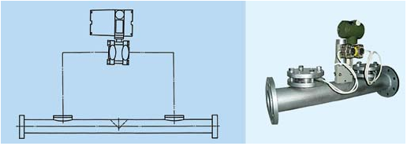

您只需一个电话，我们将提供合适的产品，竭诚为新老客户提供优质的服务！
产品分类
流量仪表与节流装置
网站当前位置：网站首页 > 产品中心- 楔形流量计

功能用途和适用范围
楔形流量计第一种特殊结构的新型压式流量仪表,适用于测量纸浆、矿浆、泥浆、含砂原油、污水、渣油等含有固体悬浮物、高粘度、低雷诺数等介质的流量。
楔形流计具有下列特点
1、节流件是置于管道内的特殊“V”形体根除了系统堵塞的现象。
2、适用雷诺数范围广，起始数值低，在ReD为500时，差压与流量仍有良好的线性关系。
3、传感器以简单的工作原理，特有的结构，简便的操作方法，灵活的选用配套仪表而得到广泛的应用范围。楔形流量计主要由两大部分组成
1、传感器部分：主要由节流件、测量管、差压检测接口等组成，用于感受流量变化，产生与流量成线性关系的差压信号。
2、双法兰差压变送器部分：主要是将传感器产生的差压检测出来，并转换成标准信号输出，供记录、指示、调节、控制之用。楔形流量计根据用户需要可为配套式和单独式，当用户要求我公司配套变送器或提供变送器时，则按配套工供货。否则单独提供传感器。
-
上一张：双文丘里管
下一张：法兰类